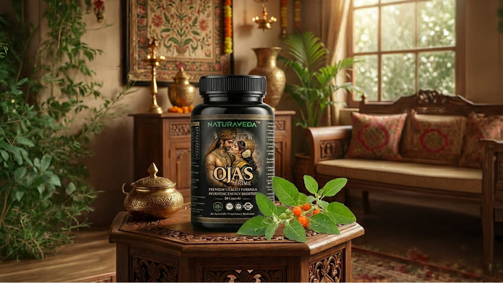
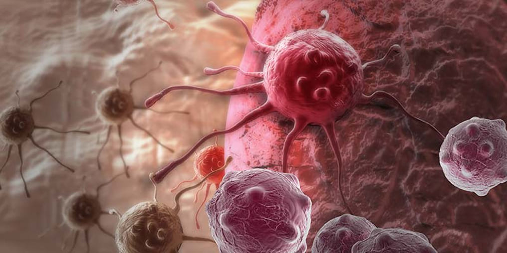
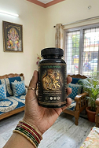

हेल्थ इंडिया न्यूज़
स्वास्थ्य एवं चिकित्सा
आयुष अनुमोदित अश्वगंधा अर्क तनाव को दूर करता है, गहरी नींद बहाल करता है और 7 दिनों में जीवन शक्ति बहाल करता है
क्रोनिक तनाव, चिंता और अनिद्रा आधुनिक दुनिया में 85% लोगों के लिए "मूक हत्यारा" हैं. उच्च कोर्टिसोल (तनाव हार्मोन) वस्तुतः आपके हृदय, प्रतिरक्षा प्रणाली और हार्मोनल प्रणाली को ख़राब कर देता है. हम थकान को कॉफी से और अपनी नसों को गोलियों से दबाने के आदी हैं।
लेकिन एक प्रमुख न्यूरोलॉजिस्ट का कहना है: 'आपको कीमो की ज़रूरत नहीं है'. आपको शुद्ध अश्वगंधा अर्क की आवश्यकता है. यह एक जैविक ईंधन है जो कोर्टिसोल के स्तर को कम करता है और आपके शरीर को सेलुलर स्तर पर रीसेट करता है. आप 20-वर्षीय व्यक्ति की ऊर्जा और स्वास्थ्य पुनः प्राप्त कर लेंगे।".
डॉ. राजेश वर्मा:
“धूम्रपान की तुलना में तनाव शरीर को अधिक तेजी से नष्ट करता है. जब आप घबराए हुए होते हैं, तो आपका शरीर "आपातकालीन" मोड में काम करता है: आपकी प्रतिरक्षा प्रणाली गिर जाती है, आपका मस्तिष्क सुस्त हो जाता है, और आपकी कामेच्छा गायब हो जाती है।. भारत में हमारे पूर्वज शांत ऋषि और शक्तिशाली योद्धा बने रहने के लिए सदियों से इस जड़ का उपयोग करते थे. आज विज्ञान ने पुष्टि की है: केंद्रित अश्वगंधा ट्रैंक्विलाइज़र की तुलना में अधिक प्रभावी ढंग से काम करता है, लेकिन बिना किसी दुष्प्रभाव के. मैं यहां खोखले वादे करने के लिए नहीं हूं. मैं यहां आपको यह दिखाने के लिए हूं कि कैसे एक प्राकृतिक घटक आपके करियर, परिवार और स्वास्थ्य को बचा सकता है।
इस उत्पाद के 4 सिद्ध प्रभाव हैं जो आपका जीवन बदल देंगे:
बचपन की तरह सोएं:
लेटने के 15 मिनट बाद आपको नींद आ जाती है. कोई विचार नहीं. 8 घंटे की गहरी, स्वस्थ नींद लें
तनाव कवच:
कोर्टिसोल गिरता है. वे स्थितियाँ जो पहले दिल को "हिला" देती थीं और धड़कने लगती थीं, अब केवल एक शांत मुस्कान का कारण बनती हैं
साफ़ मन और उत्पादकता:
मेरे सिर का कोहरा गायब हो जाता है.
आप 3 गुना तेजी से और अधिक कुशलता से काम करते हैं, जबकि अन्य लोग अपना पांचवां कप कॉफी पी रहे हैं और ध्यान
केंद्रित नहीं कर पा रहे हैं.
हार्मोनल संतुलन और कामेच्छा:
जैसे ही तनाव दूर हो जाता है, शरीर यौन क्रिया को बहाल करने के लिए ऊर्जा को निर्देशित करता है. इच्छा और अवसर स्वाभाविक रूप से लौट आते हैं. और पुरुषों में पथरी की शक्ति बहाल हो जाती है
जब आप खुद को गोलियों से जहर दे रहे हैं या शाश्वत दौड़ में जी रहे हैं, तो अन्य लोग पहले से ही प्रकृति की बुद्धिमत्ता की बदौलत पूरी क्षमता से जी रहे हैं - अश्वगंधा
क्या आपने पहले ही शाम को नींद की गोलियाँ, अवसादरोधी दवाएँ या शराब का सेवन किया है? इसे भूल जाओ
20 वर्षों के अभ्यास में मैंने हजारों लोगों को देखा है. जागने के लिए उन्होंने कई लीटर कॉफ़ी पी और सोने के लिए मुट्ठी भर गोलियाँ पी लीं।
नींद की गोलियाँ नशे की लत होती हैं और सुबह आपको "ज़ोंबी" में बदल देती हैं।
शराब गहरी नींद में खलल डालती है, जिससे आपकी उम्र तेजी से बढ़ती है।
उत्तेजक पदार्थ तंत्रिका तंत्र को तंत्रिका तंत्र के टूटने की हद तक ख़राब कर देते हैं.
आप भाग्यशाली हैं कि आप इसे अभी पढ़ रहे हैं. मैं आपको OJAS PRIME के बारे में बताऊंगा - प्राचीन ज्ञान (अश्वगंधा) और आधुनिक निष्कर्षण तकनीकों का संयोजन.
बेंगलुरु के एक आईटी मैनेजर (42 वर्ष) अमित को देखें
वह अपनी कहानी साझा करने के लिए सहमत हुए. वह थकने की कगार पर मेरे पास आया. समय सीमा, जिम्मेदारी, अपनी नौकरी खोने का डर. उसे रात को नींद नहीं आई, वह अपनी पत्नी पर बरसता रहा, उसे एक बूढ़े आदमी की तरह महसूस हुआ. हमने भारी दवाओं का उपयोग नहीं किया. हमने OJAS PRIME. कोर्स शुरू किया है
महज 14 दिन बाद नतीजे:
- नींद: 8 घंटे सोता है, बिना अलार्म घड़ी के अपने आप उठ जाता है, ऊर्जा से भरपूर होता है।
- मस्तिष्क: एक स्नाइपर की तरह एकाग्रता. एक जटिल परियोजना पूरी की और एक पुरस्कार प्राप्त किया.
- स्वास्थ्य: दबाव बढ़ना और लगातार चिंता दूर हो गई है. अधिकतम क्षमता - सेक्स के लिए हमेशा तैयार
- परिवार: घर पर चीखना-चिल्लाना बंद हो गया. परिवार में सद्भाव लौट आया है, और मेरी पत्नी के साथ रिश्ते में वह चिंगारी जो लंबे समय से नहीं थी वह वापस लौट आई है
"यदि कोई व्यक्ति अपने कोर्टिसोल को नियंत्रण में लाने में सफल हो जाता है, तो उसका शरीर स्विस घड़ी की तरह काम करना शुरू कर देगा।". बुढ़ापा धीमा हो जाएगा. यह वैज्ञानिक रूप से सिद्ध है"
किसी भी उम्र में शांति और ऊर्जा कैसे बहाल करें?
हमने 1000 स्वयंसेवकों पर एक अध्ययन किया. 97% मामलों में हमारे फ़ॉर्मूले की प्रभावशीलता की पुष्टि की गई है।
🌿ओजस प्राइम (शुद्ध अश्वगंधा अर्क) एक शक्तिशाली एडाप्टोजेन है. यह सिर्फ "आपको सुलाने" या "स्फूर्तिदायक" नहीं है. यह शरीर को तनाव के अनुकूल ढलना सिखाता है. यदि आपको शांत होने की आवश्यकता है, तो वह आपको शांत कर देता है. यदि आपको ऊर्जा की आवश्यकता है, तो यह ताकत देती है।
OJAS PRIME दो काम करता है, जो परीक्षणों से सिद्ध हुए हैं:
1. कोर्टिसोल को रोकता है:
अश्वगंधा अतिरिक्त तनाव हार्मोन रिलीज को कम करता है. आपका तंत्रिका तंत्र लड़ाई या उड़ान मोड में काम करना बंद कर देता है, आपकी हृदय गति कम हो जाती है, और आपके स्वास्थ्य और खुशहाली में सुधार होने लगता है।
2. संसाधन पुनर्स्थापित करता है:
जब आप गहरी नींद लेते हैं (जो दवा प्रदान करती है), तो शरीर मांसपेशियों, मस्तिष्क के न्यूरॉन्स की मरम्मत करता है और हार्मोनल स्तर को बहाल करता है।

50% छूट के साथ ऑर्डर करेंहम शब्दों पर विश्वास नहीं करते, हम संख्याओं पर विश्वास करते हैं
प्रवेश के 30 दिनों के बाद प्रतिभागियों का डेटा यहां दिया गया है:
| पैरामीटर | पाठ्यक्रम से पहले | ओजस प्राइम कोर्स के बाद |
| नींद की गुणवत्ता | सतही, जागना, प्रातः 3 बजे से पहले अनिद्रा | गहरी नींद, 15 मिनट में नींद आना, सुबह जोश ☀️ |
| तनाव का स्तर | चिंता, चिड़चिड़ापन, घबराहट | पूर्ण शांति, "स्टील की नसें", आत्मविश्वास 🧘♂️ |
| उत्पादकता | थकान, आलस्य, विलंब | पूरे दिन उच्च ऊर्जा, बढ़ी हुई सहनशक्ति 🚀 |
| संबंध | नसों के कारण झगड़े, कामेच्छा कम होना | परिवार में सद्भाव, रुचि और जुनून की वापसी ❤️ |
| सामान्य हालत | अभिभूत महसूस करना ("एक बूढ़े आदमी की तरह") | युवा और मजबूत महसूस कर रहा हूं 💪 |
जिन लोगों ने अपने जीवन पर पुनः नियंत्रण पा लिया है वे क्या कहते हैं:
विक्रम, उद्यमी, 45 वर्ष:
“व्यवसाय मुझे जिंदा खा रहा था. मैं कई वर्षों से सोया नहीं हूं, कॉफी और रक्तचाप की गोलियों पर रहता हूं. मुझे लगा कि दिल का दौरा बस समय की बात है. मैंने अपनी घबराहट को शांत करने के लिए ओजस प्राइम खरीदा. परिणाम चौंकाने वाला था! 4 दिन बाद मुझे पहली असली नींद आई. अब मैं बिना चिल्लाए, ठंडे दिमाग से समस्याएं सुलझाता हूं. काम और जिम दोनों के लिए पर्याप्त ऊर्जा. मेरे प्रतिस्पर्धी हैरान हैं: मुझे इतनी ताकत कहाँ से मिलती है?”
प्रिया, 36 वर्ष, कामकाजी माँ:
“मैं काम और दो बच्चों के बीच उलझा हुआ था. शाम तक मैं बहुत थक गया था, लेकिन मुझे नींद नहीं आ रही थी - मेरे दिमाग में कामों की सूची घूम रही थी. मैं घबरा गई, अपने पति पर बरस पड़ी और मेरे बाल झड़ने लगे।. एक मित्र ने मुझे अश्वगंधा की सिफारिश की थी. यही मोक्ष है! मैं चट्टान की तरह शांत हो गया. मैं गहरी नींद सोता हूं और सुबह सुंदर होकर उठता हूं और आराम करता हूं।. और, वैसे, मेरे पति और मैंने अपना "दूसरा हनीमून" शुरू किया, इच्छा वापस आ गई है!"
राहुल, छात्र, 22 वर्ष:
“परीक्षा से पहले मुझे पैनिक अटैक आते थे. मेरे हाथ काँप रहे थे, मैंने पढ़ा और डर के मारे कुछ भी याद नहीं रहा।. मैंने कोर्स करने का फैसला किया. प्रभाव संचयी लेकिन शक्तिशाली है. 2 सप्ताह के बाद डर पूरी तरह ख़त्म हो गया. मुझे खुद पर भरोसा हो गया है, मेरा फोकस 100% है. मैंने सभी से बेहतर परीक्षा उत्तीर्ण की, मेरा दिमाग कंप्यूटर की तरह स्पष्ट रूप से काम करता है।
एक डॉक्टर से साक्षात्कार
रिपोर्टर: डॉ. वर्मा, कई लोगों का मानना है कि तनाव सिर्फ एक "खराब मूड" है जो अपने आप दूर हो जाएगा. आप इसे खतरनाक क्यों कहते हैं?
डॉ. राजेश वर्माः देखिए, एक डॉक्टर के तौर पर मैं आपको बताऊंगा: तनाव को नजरअंदाज करना आपके शरीर के खिलाफ अपराध है. दीर्घकालिक तनाव कैंसर सहित गंभीर बीमारियों का खुला द्वार है. मुझे सरलता से समझाने दीजिए. हमारे शरीर में "पुलिस" है - रोग प्रतिरोधक क्षमता. यह हर दिन कैंसर कोशिकाओं और वायरस को खोजता है और नष्ट करता है. लेकिन जब आप तनावग्रस्त होते हैं, तो आपका शरीर कोर्टिसोल से भर जाता है।. कोर्टिसोल आपकी पुलिस को सुला देता है. रक्षा बूँदें

तस्वीर. कैंसर कोशिकाएं
यह बदमाशी नहीं है, यह जीव विज्ञान है. और इसी समय बीमारियों का आक्रमण शुरू हो जाता है. आपको अपनी नौकरी या पैसा खोने का डर है और इस समय आपका शरीर ट्यूमर और दिल के दौरे से खुद को बचाने की क्षमता खो रहा है. इतना जोखिम क्यों लें?
रिपोर्टर: डॉ. वर्मा, कई लोगों का मानना है कि तनाव सिर्फ एक "खराब मूड" है जो अपने आप दूर हो जाएगा. आप इसे खतरनाक क्यों कहते हैं?
डॉ. राजेश वर्माः बिल्कुल. अश्वगंधा (विथानिया सोम्नीफेरा) भारतीय ज्ञान का एक मोती है, "रसायन", जो जीवन को लम्बा खींचता है. आधुनिक विज्ञान ने पुष्टि की है: यह सबसे अच्छा प्राकृतिक कोर्टिसोल अवरोधक है. OJAS PRIME में हम शुद्ध अर्क का उपयोग करते हैं. जब आप इसे पीना शुरू करते हैं, तो 5 विशिष्ट परिवर्तन होते हैं:
अश्वगंधा से 5 विशिष्ट परिवर्तन:
🧠 मस्तिष्क और नींद:
गहरी नींद के चरण बहाल हो जाते हैं. चिंता, पैनिक अटैक और पुरानी अनिद्रा से राहत दिलाता है. आप कम सोते हैं, लेकिन बेहतर नींद लेते हैं.
❤️ हृदय और वाहिकाएँ:
कोलेस्ट्रॉल और शर्करा के स्तर को कम करता है (जो नसों से बढ़ता है). दिल का दौरा पड़ने का जोखिम कम हो जाता है
🛡प्रतिरक्षा:
कोर्टिसोल गिरता है → रोग प्रतिरोधक क्षमता जागृत होती है. शरीर फिर से वायरस और रोगजनक कोशिकाओं को नष्ट कर देता है।
🔋ऊर्जा और युवा:
गहरी नींद के चरण बहाल हो जाते हैं. चिंता, पैनिक अटैक और पुरानी अनिद्रा से राहत दिलाता है. आप कम सोते हैं, लेकिन बेहतर नींद लेते हैं.
🔥 यौन स्वास्थ्य (दोनों लिंगों के लिए महत्वपूर्ण):
- • पुरुषों के लिए: टेस्टोस्टेरोन में वृद्धि, शक्ति और सहनशक्ति को मजबूत करना.
- • महिलाओं के लिए: हार्मोनल स्तर का सामान्यीकरण, कामेच्छा में वृद्धि और पीएमएस/रजोनिवृत्ति के लक्षणों से राहत
OJAS PRIME में हम इस प्राचीन शक्ति का उसकी शुद्धतम एकाग्रता में उपयोग करते हैं।.
यह महान भारतीय परंपरा और आधुनिक सुरक्षा का मिलन है.
आपको हजारों वर्षों से प्रमाणित सुरक्षा मिलती है.
रिपोर्टर: क्या यह सुरक्षित है?
डॉ. राजेश वर्माः बिलकुल. कोई रसायन शास्त्र नहीं. केवल शुद्ध अश्वगंधा अर्क. हम 100% गारंटी देते हैं. यदि आपको ताकत और मानसिक शांति महसूस नहीं होती है, तो हम आपके पैसे वापस कर देंगे. आप परिणामों के लिए भुगतान करते हैं, वादों के लिए नहीं.
(पुरानी कीमत पर केवल 14 पैक बचे हैं)
बिस्तर में लीजेंड बनने का मौका न चूकें
स्वास्थ्य सहायता कार्यक्रम के हिस्से के रूप में, अब 50% छूट है।
ध्यान दें: पुरानी कीमत पर केवल 19 पैकेज बचे हैं. दवा के हिस्से के रूप में अश्वगंधा की इस किस्म का निर्यात सरकार द्वारा प्रतिबंधित है. अगला बैच केवल 6 महीने में होगा. स्टॉक रहने तक ऑर्डर करें!
आपके क्षेत्र में तेज़ डिलीवरी उपलब्ध है (भारत).
ओजस प्राइम कैसे प्राप्त करें?
1. नाम और फ़ोन नंबर दर्ज करें
ऑर्डर फॉर्म भरें
2. कॉल का इंतज़ार करें
एक विशेषज्ञ सवालों का जवाब देगा
3. प्राप्ति पर भुगतान
डिलवरी पर नकदी. कोई जोखिम नहीं

निर्माता की ओर से महत्वपूर्ण सूचना
OJAS PRIME की लोकप्रियता के कारण नकली उत्पादों का उदय हुआ है. आयुष प्रमाणन और परिणाम गारंटी वाला यह उत्पाद केवल इस वेबसाइट पर आधिकारिक ऑर्डर फॉर्म के माध्यम से बेचा जाता है।
हमने भारतीय निवासियों के लिए कीमत कम रखने के लिए सभी बिचौलियों को हटा दिया है।
निर्माता से अतिरिक्त जानकारी
📋 ओजस प्राइम कोर्स की आवश्यकता किसे है?
स्वयं की जांच करो. यदि आप सूची में से कम से कम 2 वस्तुओं की जाँच करते हैं, तो आपका शरीर मदद के लिए चिल्ला रहा है:
नींद की समस्या:
आप लंबे समय तक करवटें बदलते रहते हैं, अक्सर रात में जाग जाते हैं या सुबह सुस्ती महसूस करते हैं
दीर्घकालिक थकान:
दोपहर के भोजन के समय ऊर्जा शून्य पर होती है, कॉफ़ी अब मदद नहीं करती है.
"नसें किनारे पर":
छोटी-छोटी बातें आपको परेशान कर देती हैं, आप प्रियजनों पर गुस्सा निकालते हैं, आपको लगातार चिंता महसूस होती है या आपके गले में गांठ महसूस होती है।
कामेच्छा में कमी:
आपके पास अंतरंग जीवन के लिए ताकत या इच्छा नहीं है (पुरुषों और महिलाओं के लिए प्रासंगिक).
ब्रेन फ़ॉग:
ध्यान केंद्रित करने में कठिनाई, याददाश्त ख़राब हो गई है, काम करना मुश्किल हो गया है
🕒 अश्वगंधा कैसे काम करता है: क्या उम्मीद करें?
यह समझना महत्वपूर्ण है: ओजस प्राइम 100% प्राकृतिक अर्क है, न कि कोई रासायनिक उत्तेजक।. यह "हथौड़े" की तरह काम नहीं करता (तुरंत, लेकिन ठंडेपन के साथ). यह एक "वास्तुकार" की तरह काम करता है, धीरे-धीरे ईंट दर ईंट आपके शरीर का पुनर्निर्माण करता है।
📉 प्रभाव संचयी है. यदि आपको पहले दिन कोई बड़ा बदलाव महसूस न हो तो पाठ्यक्रम न छोड़ें!
1 सप्ताह:
शरीर विथेनोलाइड्स से संतृप्त होने लगता है. तीव्र चिंता कम हो जाती है, आप शांत हो जाते हैं.
2-3 सप्ताह:
नींद सामान्य हो जाती है. आपको कम समय में भरपूर नींद मिलने लगती है. सुबह के समय हल्कापन दिखाई देता है
4 सप्ताह:
चरम दक्षता. कोर्टिसोल का स्तर सामान्य है. आप ऊर्जा का एक शक्तिशाली उछाल, मानसिक स्पष्टता और यौन क्रिया की बहाली महसूस करते हैं।
💊 निर्देश: अपनी रणनीति चुनें
अश्वगंधा एक स्मार्ट पौधा है. प्रशासन के समय के आधार पर, यह अलग-अलग प्रभाव देता है. चुनें कि आपको क्या चाहिए:
🌙 रणनीति "तनाव-विरोधी और नींद" (अनुशंसित)
· कब: सोने से 30-40 मिनट पहले 1 कैप्सूल लें
· क्यों: विचारों के प्रवाह को रोकने के लिए, तंत्रिका तंत्र को आराम दें, जल्दी सो जाएं और पूरी रात गहरी नींद लें. उन लोगों के लिए आदर्श जो अनिद्रा से पीड़ित हैं।
☀️ रणनीति "ऊर्जा और उत्पादकता"
·कब: सुबह नाश्ते के बाद 1 कैप्सूल लें
·क्यों: स्वर, सहनशक्ति और एकाग्रता बढ़ाने के लिए. आप पूरे दिन शांत, लेकिन ऊर्जा से भरपूर रहेंगे. महत्वपूर्ण बैठकों या परीक्षाओं से पहले आदर्श.
💡 डॉक्टर की सलाह: शरीर की अधिकतम रिकवरी के लिए, बिना ब्रेक के पूरा कोर्स (30 दिन) पीने की सलाह दी जाती है।
टिप्पणियाँ (134)
अर्जुन शर्मा

दोस्तों, मैं कम ही समीक्षाएँ लिखता हूँ, लेकिन यहाँ मुझे कहना होगा. मैं 12 दिनों से ओजस प्राइम पी रहा हूं।. मैं भूल गया कि टूटकर जागना कैसा होता है! मैं काम करने के लिए 5 कप कॉफी पीता था, अब मुझमें काफी ऊर्जा है. और मेरी पत्नी ने देखा कि मैं बहुत शांत हो गया हूँ. मैं इसकी अनुशंसा करता हूं, यह पैसे के लायक है! 👍
पसंद करें · उत्तर दें · 12 मिनट
लक्ष्मी नारायणन
मैं आयुर्वेद में विश्वास करता हूं. आयुष मंत्रालय मंजूरी ही नहीं देता. यह हमारी विरासत है
पसंद करें · उत्तर दें · 11 घंटे
प्रिया मेनन

अब तक की सबसे अच्छी खरीदारी! मैंने इसे अपने पति के लिए ऑर्डर किया था क्योंकि वह काम के कारण लगातार बाहर रहते थे, लेकिन हमने साथ में शराब पीना शुरू कर दिया. मेरी चिंता दूर हो गई है, मैं मृतकों की तरह सो गया हूं. मैं सुबह उठता हूं और तुरंत पहाड़ों पर जाने के लिए तैयार हो जाता हूं।. लड़कियों, यह त्वचा और बालों के लिए भी बहुत अच्छा प्रभाव डालता है! 🥰
पसंद करें · उत्तर दें · 2 घंटे
विक्रम सिंह
क्या यह सचमुच काम करता है या यह सिर्फ एक और घोटाला है? किसने इसे आज़माया, मुझे ईमानदारी से बताएं.
पसंद करें · उत्तर दें · 2 घंटे
अमित पटेल
@विक्रम सिंह भाई मैं संशयवादी हूं लेकिन यह काम करता है. यह अश्वगंधा, शुद्ध प्रकृति है. दूसरे हफ्ते में मुझे हॉल और बेडरूम में फर्क महसूस हुआ. इसे ले लो, तुम्हें पछताना नहीं पड़ेगा.
पसंद करें · उत्तर दें · 2 घंटे
सुरेश रेड्डी
मैं 58 साल का हूं और मधुमेह का रोगी हूं. क्या मैं इसे ले लूं?
पसंद करें · उत्तर दें · 4 घंटे
डॉ. राजेश वर्मा
@सुरेश रेड्डी हां, अश्वगंधा सुरक्षित है और मधुमेह के लिए भी फायदेमंद है, लेकिन बेहतर होगा कि आप अपने डॉक्टर से सलाह लें।
पसंद करें · उत्तर दें · 3 घंटे
मोहम्मद इरफ़ान
मैं 58 साल का हूं और मधुमेह का रोगी हूं. क्या मैं इसे ले लूं?
पसंद करें · उत्तर दें · 5 घंटे
नेहा गुप्ता
क्या इससे पढ़ाई में मदद मिलती है? मेरी परीक्षा है, तनाव के कारण मुझे कुछ भी याद नहीं है.
पसंद करें · उत्तर दें · 5 घंटे
अंजलि देसाई
@नेहा गुप्ता हाँ! मैंने सत्र से पहले शराब पी थी. सिर एकदम साफ हो जाता है, घबराहट दूर हो जाती है. मैंने सब कुछ पूरी तरह से पास कर लिया
पसंद करें · उत्तर दें · 5 घंटे
रोहन मल्होत्रा
शक्तिशाली चीज़. वर्कआउट आसान होता है, मांसपेशियां तेजी से ठीक होती हैं. टेस्टोस्टेरोन स्पष्ट रूप से बढ़ गया है 💪
पसंद करें · उत्तर दें · 7 घंटे
कार्तिक जे
कीमत सामान्य है, किसी फार्मेसी में ऐसी गुणवत्ता अधिक महंगी होगी. आदेशित
पसंद करें · उत्तर दें · 8 घंटे
सायरा बानो
मेरे पति बिल्कुल अलग इंसान बन गए हैं. शांत, चौकस, बच्चों पर चिल्लाना बंद कर दिया. इस उत्पाद के लिए धन्यवाद! 🙏
पसंद करें · उत्तर दें · 9 घंटे
मनोज तिवारी
अभी-अभी फॉर्म भरा है, कृपया मुझे जल्दी वापस कॉल करें.
पसंद करें · उत्तर दें · 10 घंटे
राजेश कुमार
मुंबई तक डिलीवरी की लागत कितनी है? क्या डिलीवरी पर भुगतान (सीओडी) है?
पसंद करें · उत्तर दें · 1 घंटा
विजय पाटिल
तीसरा डिब्बा पहले ही जा चुका है. मुझे ऐसा लग रहा है जैसे मैं 25 साल का हूं. मेरी पत्नी खुश है)) 😉
पसंद करें · उत्तर दें · 12 घंटे
सिमरन कौर
क्या छूट अभी भी वैध है? मैं अपने माता-पिता के लिए ऑर्डर करना चाहता हूं
पसंद करें · उत्तर दें · 14 घंटे
दीपक चोपड़ा
सुपर उत्पाद! 2 दिनों के भीतर डिलीवरी बहुत तेज़ थी
पसंद करें · उत्तर दें · 15 घंटे
अरुण दास
@रवि कुमार देखिए मैंने आपको यही बताया था. ऑर्डर तब करें जब प्रमोशन हो
पसंद करें · उत्तर दें · 16 घंटे
सुनीता राव
आख़िरकार मैंने नींद की गोलियाँ लेना बंद कर दिया. मैं अपने आप सोता हूँ! धन्यवाद ओजस प्राइम ❤️
पसंद करें · उत्तर दें · 1 दिन